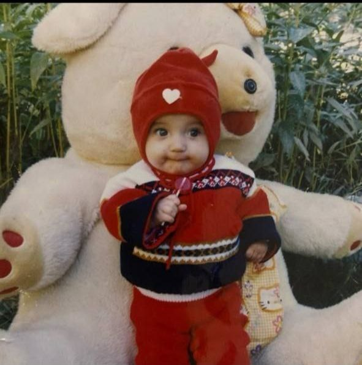
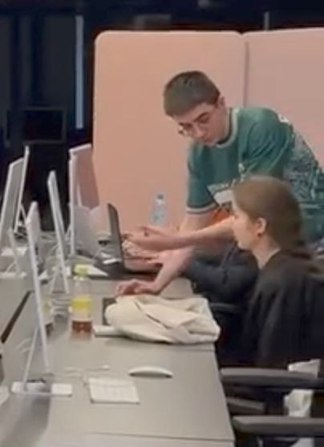
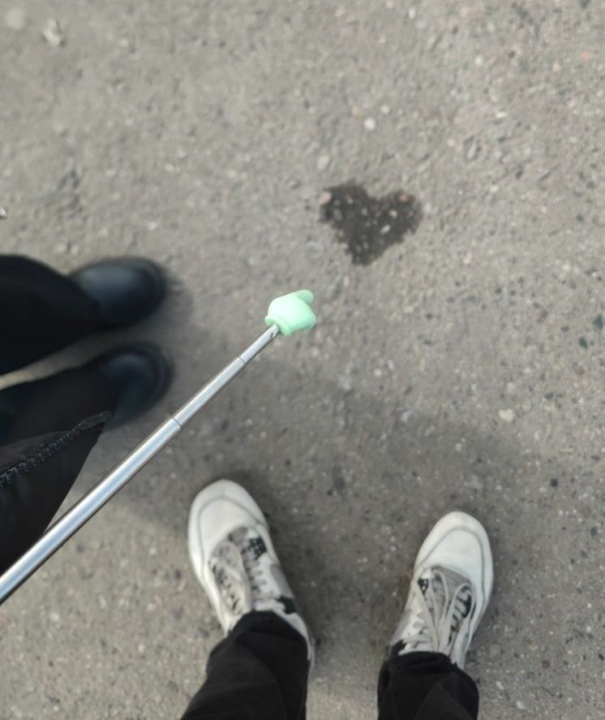
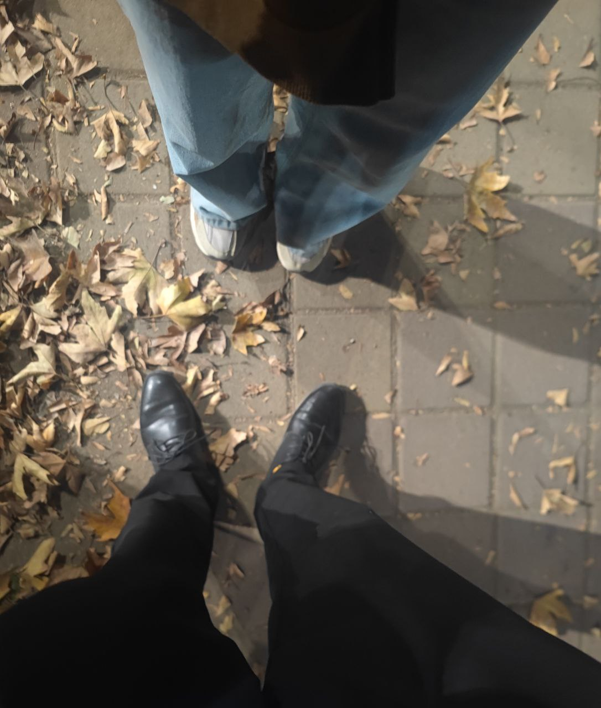

Письмо для тебя
Моя самая дорогая,
Я слушал много песен и учил принципы музыки, но твой голос, боже мой, ни один звук, композиция, мелодия, исполнитель, инструмен НИЧТО не сравнится с твоим звучанием, я люблю тебя слушать
Имея цветовую слепоту и не самое лучшее зрение я все равно вижу тебя самой красивой девушкой, ты не представляешь на сколько нереально выглядишь, каждый раз думаю что ты мне снишься и молюсь не просыпаться, эта нежность, женственность и каждый кусочек тела и души, я не могу...
Ты самая лучшая сестра, самая лучшая дочь, ты самая лучшая подруга, ты самый лучший спутник жизни, Луна с Землей не сравнятся с нами
Твой характер... даже когда ты злишься, даже когда ты не в настроении, я все равно люблю этот характер и всегда буду с тобой в плохие дни, а когда у тебя все хорошо, ты ослепляешь, радуешь всех близких, радуешь меня:)
У тебя самый эстетичный и уникальный вкус во всем, от одежды до мельчайших деталей и как же ты ценишь эти маленькие кирпичики из которых состоит что-то большее, что показывает твой интеллект и мудрость, что не раз спасало меня дурака
Я просто хочу быть с тобой и мне от этой жизни больше ничего не надо:)
Навсегда твой,
С любовью
Наши прекрасные моменты
Каждое воспоминание с тобой — это высеченные в моем мозгу самые прекрасные моменты




Закалённое боями, знаниями и жизнью доспехи мои Не разрушаемый щит и мой могучий меч И до сердца камней бесконечных слои Как бы грозным не казался солдат, растаял он от одной с вами встречи Вы пробили насквозь и разнесли в щепки мои орудия силой любви И клянусь я вам, что готов вас от всего сберечь Если позволите быть рядом, буду биться за вас до крови И извольте ярчайшая звезда, мне спустить валентинку из своих плеч